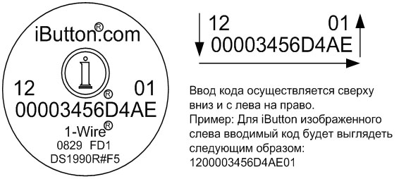

Таблетка-ключ это не просто резистор. В данном случае это микросхема под названием iButton которая работает на интерфейсе 1-wire. в момент прикосновения происходит подача питания по 2 контактам и передача цифробуквенного ключа через эти-же контакты по которым идёт питание. скорость передачи данных мала но её вполне хватает чтобы за миллисекунды передать ключ:

В наше время "таблетки" такого рода это не только домофоны.. это и системы сигнализаций и т.д.
В идеале, в домофон должны быть вбиты только перечни ключей принадлежащие людям которые живут в подъезде. В таком случае вариация с универсальным ключом отпадает.